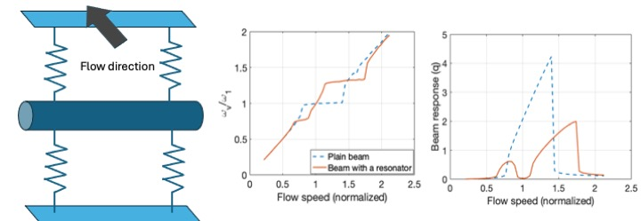

Structures suspended in low-speed flow cause alternating vortex shedding when oscillating in the transverse direction of the uniform flow. Alternating vortex, in return, causes fluctuations in the lift force applied on the structure at a frequency proportional to the flow velocity, leading to vortex-induced vibrations (VIV). When the oscillations in lift force have a frequency that is close to the natural frequency of the structure, the vortex shedding synchronizes with the structure’s natural frequency, which is called the frequency lock-in, and leads to sudden, high-amplitude vibrations. Our aim is to develop metamaterials that can mitigate these sudden, large-amplitude oscillations.
In addition, we investigate the limits of the reduced-order models to represent the system dynamics. The fluctuating vortex variable, which is a direct measure of the lift force, shows limit cycle oscillations, and is often modeled with a van der Pol oscillator. However, this model is highly sensitive to initial conditions, where the effect of the initial displacement and the velocity of the structure on the lock in width can be significant. Our goal is to explore the validity of this model through experiments.
